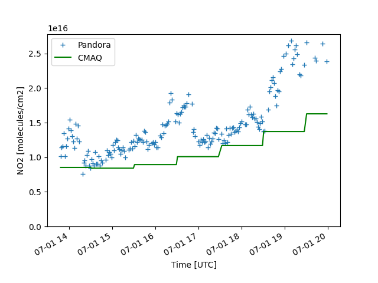

Note
Go to the end to download the full example code
CMAQ vs Pandora¶
Timeseries comparison of NO2 columns from CMAQ and Pandora over a small window over New York/New Jersey for 2018-07-01.
import pyrsig
bbox = (-74.5, 40., -73.5, 41)
cmaqkey = 'cmaq.equates.conus.integrated.NO2_COLUMN'
datakey = 'pandora.L2_rnvs3p1_8.nitrogen_dioxide_vertical_column_amount'
# Or use TropOMI or any other NO2 columns data
# datakey = 'tropomi.offl.no2.nitrogendioxide_tropospheric_column'
# Get a CMAQ file from RSIG
api = pyrsig.RsigApi(
bbox=bbox, bdate='2018-07-01T12', edate='2018-07-01T23:59:59'
)
ds = api.to_ioapi(cmaqkey)
# pair_rsigcmaq will match the CMAQ bbox, bdate, and edate
df = pyrsig.cmaq.pair_rsigcmaq(ds, 'NO2_COLUMN', datakey)
pdf = df.groupby(['time']).mean(numeric_only=True)
z1 = pdf['nitrogen_dioxide_vertical_column_amount']
z2 = (pdf['CMAQ_NO2_COLUMN'] * 1e15)
ax = z1.plot(marker='+', linestyle='none', label='Pandora')
ax = z2.plot(ax=ax, color='green', label='CMAQ')
ax.legend()
ax.set(ylim=(0, None), ylabel='NO2 [molecules/cm2]', xlabel='Time [UTC]')
ax.figure.savefig('cmaq_pandora.png')
Total running time of the script: ( 0 minutes 2.826 seconds)